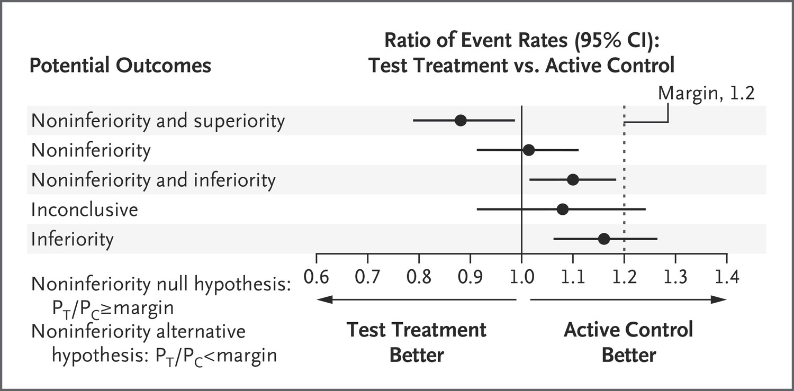

Comparing model performance rigorously and meaningfully using statistics.
machine learning
deep learning
statistics
meta-science
Author
Ehud Karavani
Published
August 30, 2024
Modified
October 9, 2025
Note
This post is still a work in process.
Motivation
I’m under the impression that deep learning models are not benchmarked properly, making it difficult to draw meaningful conclusions. Too often than not, models will be evaluated using a single number, with no uncertainty around that number. Too often than not, the difference in performance of different models will not be assessed directly, and again, no uncertainty around that difference either1.
This creates difficulty in understanding which models are comparable and which are superior. Is a point difference of 0.1% between models on the leaderboard meaningful or a fluke? As the monetary (and environmental) costs of training these large language models (LLMs) skyrockets, we should be able to truly tell whether size matters and are larger models really are superior to their slimmer, more economical versions.
To solve that, we’ll need to know the range of errors compatible with the model; not just the average score - but the uncertainty around it. Unfortunately (non-Bayesian) machine learning and deep learning models don’t lend themselves to uncertainty estimation easily. Oftentimes, estimating the variability in model performance requires the bootstrap (sampling data with replacement and refitting)2 or cross validation. But fitting just a single model can exhaust unreasonable resources, so fitting it hundreds (or even thousands) of times just to estimate its variance is out of the question. Luckily, there are other ways to estimate the variance of model performance using the variability within the dataset or asymptotics (that may very well kick in as datasets can be large). In this post I’ll show how to utilize them.
What’s in it for you
In this blog post I’ll explore an approach to rigorously compare the performance of two (or more!) models directly. It will incorporate uncertainty that will allow us to assess whether a model is truly superior or inferior (or non-inferior) to others3. It will be a generalizable framework, allowing for multiple models, multiple metrics, multiple datasets, even at once. Moreover, it is totally decoupled from the actual models - you’ll only need predictions and ground-truth labels. No need for refitting or retrofitting, only a forward pass.
Setup
To achieve all that I will utilize Statistics; which I personally feel were long overlooked as the field of machine (and then deep) learning became more and more dominated by engineers (or engineering mindset rather than by scientists more versed in the scientific method and its philosophy). It’s not necessarily a bad thing! Engineers get things done, but the skill sets (or the mindset) may de-prioritize Research Methods.
However, I’m a statistics reformer kind of person. So I will not trouble you with the zoo of statistical tests - it appears they are mostly just linear models (Lindeløv 2019). You know, “regression”. Sometimes called “ANOVAs”, but I know this jargon might intimidate some, so let’s stick with “linear models” for now4. The most important point is that I will use this machinery to compare between models. The benefit using this framework is that it comes with 100+ years of statistics research focusing on uncertainty estimation, that – thanks to software available today – we can just apply off-the-shelf.
To be completely honest, I don’t think this approach is novel, at least not in its basic version. Although I haven’t encountered it exactly as I’m going to present it, it might be the case I just haven’t landed on the right keyword search on google. And I’ll use Python, which I hope is more convenient to those who are versed in the field of deep learning. So, as always, some people will find this post informative and some will just scoff.
Prerequisites
Before I start, I’ll cover some of the basics first, for completeness. If you’re comfortable with statistical inference, regression, and model evaluation, then you can skip it (or at least skim it).
Notations
Throughout the post I’ll use \(X\) (X) to denote a feature matrix (covariates), \(y\) (y or y_true) will be the ground truth labels coupled to \(X\), and \(\hat{y}\) (y_pred) will be the predictions from an arbitrary model \(f(X)\) (a linear regression or a deep neural network) aiming to be as closest to \(y\) as possible.
The approach I’ll present will only need \(y\) and \(\hat{y}\), making it independent of \(f\) and whatever software or hardware it is attached to.
Individual-level errors
Performance metrics are a way to quantify the performance of a model, assessing how the model errs by comparing the ground truth labels (\(y\)) to the predictions (\(\hat{y}\)). Most commonly known will be the mean squared error (MSE) if \(y\) is continuous or log-loss (aka cross entropy) if \(y\) is categorical. If you are, like me, used to Scikit-learn’s metrics API with metric(y_true, y_pred) returning a single number - the average over the dataset, you might have forgotten that these errors can be calculated on an individual level. For instance, \(l_i = (y_i - \hat{y}_i)^2\) is the individual-level squared error of observation \(i\) (which is later averaged to obtain the mean squared error).
Note that not all evaluation metrics allow individual-level errors. For instance, the ROC AUC (and many confusion matrix-based metrics) will often require aggregating over the sample, and individual-level errors might not be well-defined5.
Regression models are fancy average machines
Linear models (those \(y_i = \alpha + \beta X_i\), for example) end up estimating \(E[Y|X]\). Namely, the expected value of \(Y\) given some level of \(X\). Basically, the average value of \(Y\) in some setting. And if there is no \(X\) (i.e., there is only an intercept, so \(y_i = \alpha\)), then that’s just the average overall, look:
import numpy as npimport pandas as pdimport statsmodels.formula.api as smfrng = np.random.default_rng(seed=0)y = rng.normal(loc=3, size=1000)ols = smf.ols("y ~ 1", data=pd.DataFrame({"y": y})).fit()print(f"Taking the mean of `y`: {y.mean():.4f}")print(f"The coefficient of the regression intercept: {ols.params['Intercept']:.4f}")
Taking the mean of `y`: 2.9520
The coefficient of the regression intercept: 2.9520
The nice thing about the regression framework is that we also get inferential results (standard errors, confidence intervals, p-values…) for free, off-the-shelf. In the frequentist (read, “standard”) regression setting, this is done using analytical asymptotic properties (no resampling and refitting)
print(ols.summary(slim=True))
OLS Regression Results
==============================================================================
Dep. Variable: y R-squared: 0.000
Model: OLS Adj. R-squared: 0.000
No. Observations: 1000 F-statistic: nan
Covariance Type: nonrobust Prob (F-statistic): nan
==============================================================================
coef std err t P>|t| [0.025 0.975]
------------------------------------------------------------------------------
Intercept 2.9520 0.031 95.523 0.000 2.891 3.013
==============================================================================
Notes:
[1] Standard Errors assume that the covariance matrix of the errors is correctly specified.
Averaging individual-level errors with regression
Tying the two subsections above together, given a ground truth vector \(y\) and predictions \(\hat{y}\), we can calculate the mean squared error as an average or with a regression.
from sklearn.metrics import mean_squared_errory = rng.normal(loc=3, size=1000)y_pred = y + rng.normal(loc=0, scale=0.5, size=1000)individual_errors = (y - y_pred)**2ols = smf.ols("li ~ 1", data=pd.DataFrame({"li": individual_errors})).fit()print(f"Taking the mean of the squared errors with sklearn: {mean_squared_error(y, y_pred):.4f}")print(f"The coefficient of the regression intercept: {ols.params['Intercept']:.4f}")
Taking the mean of the squared errors with sklearn: 0.2415
The coefficient of the regression intercept: 0.2415
Generalization and statistical inference of model performance
Model performance is a characteristic of the model. Evaluating it on a given dataset is not the core interest of the researcher. We often care about generalization errors - figuring out what will be the performance when the model will be deployed publicly on unseen data.
This notion of generalization carries a very similar meaning to inferential statistics, where the average in a sample is of little importance relative to the mean of the entire underlying population from which the dataset was sampled from6. And since the leap from sample average to population mean comes with some uncertainty to it, we often bound these estimates with uncertainty intervals around them7.
Like inferential statistics, in generalization we would like to infer what will the average error rate will be on unknown data out there in the world, using the sample of data we do have right now. We don’t really care about the error in any given dataset, even if it is a test set that was not used for training, it is still just a sample from the possible population of data available in the world. The leap from the average error rate in the dataset to the errors out there comes with some uncertainty to it, and we’d like to know the likely range of that average error rate in the actual world.
Uncertainty-aware model comparison via regression
As alluded to above, we’ll use individual-level errors in a regression framework in order to infer the uncertainty around performance measures. Knowing whether all errors tightly clustered around zero or if their variance is high will be useful information when we will take uncertainty-aware differences of performance between models.
Settings up data
To demonstrate the process, we will need labeled data and we will need prediction models. I’ll use toy data of a regression, rather than classification, task (i.e., a continuous target) for simplicity as squared errors were already introduced, but this can work with any individual-level metric. I will split it train and test, so the comparison will be performed on unseen-data. As for models, I’ll compare a linear (regression) with a nonlinear (boosting trees) one, just so we can see the difference in performance.
To compare the difference in performance between the models, I’ll model it as a regression task setting the individual-level errors as the target and a dummy coding of the models as the feature (together with an intercept). This merely requires concatenating the errors and indicating which model corresponds to them.
OLS Regression Results
==============================================================================
Dep. Variable: li R-squared: 0.019
Model: OLS Adj. R-squared: 0.017
No. Observations: 400 F-statistic: 7.810
Covariance Type: nonrobust Prob (F-statistic): 0.00545
==================================================================================
coef std err t P>|t| [0.025 0.975]
----------------------------------------------------------------------------------
Intercept 4.2308 0.607 6.967 0.000 3.037 5.425
C(model)[T.lr] 2.4000 0.859 2.795 0.005 0.712 4.088
==================================================================================
Notes:
[1] Standard Errors assume that the covariance matrix of the errors is correctly specified.
Accounting for repeated measures
One important detail to notice is that under this “long” data format, we actually have repeated measure. The same original datapoint appears twice - once as the residual from the linear regression model and once from the gradient boosting trees. When we stack those residuals, the rows in the dataset are no longer independent (their errors are correlated as the data point could’ve been easy/hard to predict in the first place) and ignoring this fact can lead us to incorrect inferences.9 Luckily, we can easily account for this structure by using clustered standard errors accounting for sample ids:10
# # If you were to refit the model:rols = smf.ols("li ~ 1 + C(model)", data=sqe).fit( cov_type="cluster", cov_kwds={"groups":sqe["id"]},)# # Or robustify the results of an already fitted model:# rols = ols.get_robustcov_results(# cov_type="cluster", groups=sqe["id"],# )print(rols.summary(slim=True))
You can see the point estimate for model is the same as before, but the corresponding standard error has changed.
We can now follow a standard interpretation of a linear model. The C(model)[T.lr] variable (i.e., setting lr to be encoded as 1 while gbt was encoded as 0) quantifies the average difference in squared errors (variance) between the linear regression and the boosting trees models (2.4). This allows us to directly assess the difference in model performance, but since we get asymptotic inference too, we can further place uncertainty around that difference - enabling us to tell whether it is statistically significant or not (p-value 0.0001), or at least what is a likely range for that error to be in the “population” of data from which the dataset came from (95% confidence intervals [(1.2, 3.6)]).
This direct comparison is the proper way to assess difference in performance. When deep learning model do get confidence intervals around them, they are often around the performance metrics itself. But then, translating that to confidence intervals around the difference between two models (and their own confidence intervals) is not necessarily straightforward, and requires extra caution not to misinterpret the significance (Gelman and Stern 2006).
This was relatively cool. If you stop reading here it’s ok. You are now able to compare models relatively simply and with some notion of uncertainty.
Going further
Non-inferiority testing
Noninferiority is an interesting, well-established statistical concept, that I believe might benefit the deep-learning evaluation literature. Imagine a clinical setting where you want to test a new therapeutic treatment. This treatment may not reduce mortality more than the standard of care, but it doesn’t mean it’s useless. Maybe it can be taken at home once a month, instead of 3 times a week at the clinic or have much, much fewer side effects? Wouldn’t that improve patients’ life? Well, it will improve their life assuming the mortality rate of the new treatment is not that worse than the current standard of care. If both treatment have similar or comparable mortality rate, but the newer one is cheaper/easier to administer, etc. wouldn’t we prefer it over the existing treatment?
Our statistical testing perspective has now shifted - we no longer care if the new treatment is superior to the current treatment, only that it is noninferior. In practical terms, it means we no longer compare our interval against 0 (for difference or 1 for ratio), but against some other margin which we’re willing to accept as similar for all practical considerations. Figure Figure 1 summarizes nicely what we’d like to compare against in a noninferiority setup.

Figure 1: Noninferiority hypothesis testing taken from Mauri and D’Agostino Sr (2017)
We can apply the same logic translating “treatments” to “models”. Wouldn’t we want to assess whether models have comparable performance and then select the model that is simpler/cheaper to train or has a smaller carbon footprint? Is it really worth spending 100 times more FLOPs for a point improvement of 0.1 in some metric, that we don’t even know how the variance around that 0.1 improvement looks like? We should compare models in a way that will show us the fuller picture and allow us to make a truly informed decision about model selection.
Going Bayesian
Now, I’m positive that the regression framework I presented here is somewhat equivalent to what happens in R when you use anova(mod1, mod2) (ANOVA with two models). In R, you often specify a test parameter to anova (like "Chisq" for a likelihood ratio test), but this requires knowing the degrees of freedom the models have in order to properly set up the null distribution to draw p-values from. Now, go figure what the degrees of freedom of ChatGPT11. I’m not sure if the Wald test used for the regression p-value (or confidence intervals) sidesteps it, but regardless, adopting a Bayesian framework will save us from asymptotic requirements, as the uncertainty will be directly assessed from the data at hand.
Adopting a Bayesian framework will come with multiple strengths:
First, it will allow us to focus on magnitude of difference and estimation instead of null-hypothesis significant testing (Kruschke 2013); this will be even more important for non-inferiority tests.
Second, it will allow us to interpret the uncertainty intervals more naturally and give probabilistic estimates to how likely it is that one model is better than the other (replacing confidence intervals with credible intervals).
Third, the Bayesian regression framework is more easily expandable to allow for multiple datasets (mixed/multilevel models), multiple models, and more proper modeling (generalized linear models).
Regression modeling in Python with bambi
bambi is great, our very own brms. It’s a powerful tool to specify regression formulas (like above for statsmodels) but then it will utilize PyMC under the hood to perform an MCMC-based Bayesian estimation, and do lots of additional good stuff like specifying priors automatically etc. Repeating the model comparison from above is as simple as:
import bambi as bmb# ols = smf.ols("li ~ 1 + C(model)", data=sqe).fit()bols = bmb.Model("li ~ 1 + model + (1|id)", data=sqe).fit( cores=1, # `quarto render` fails for cores>1 for unknown reason)
Initializing NUTS using jitter+adapt_diag...
Sequential sampling (2 chains in 1 job)
NUTS: [sigma, Intercept, model, 1|id_sigma, 1|id_offset]
Sampling 2 chains for 1_000 tune and 1_000 draw iterations (2_000 + 2_000 draws total) took 7 seconds.
We recommend running at least 4 chains for robust computation of convergence diagnostics
The rhat statistic is larger than 1.01 for some parameters. This indicates problems during sampling. See https://arxiv.org/abs/1903.08008 for details
Here we account for the repeated measures by adding an intercept for each , which accounts to the fact that different data points have different characteristics making them easier or harder to adjust, and we want to adjust for that Ideally, after fitting a Bayesian model you should evaluate the fit using some diagnostics and az.trace_plot(), which I will skip (but I checked, it’s ok).
Bayesian noninferiority testing
The Bayesian inference framework, focusing on estimation and providing a full posterior distribution of the difference in performance, makes it really easy to test for noninferiority. We can use the Region of Practical Equivalence (ROPE) to specify an intervals that is equivalent to the null, meaning it has practically no effect of interest and is therefore negligible (e.g., within 1% change in performance between model is good enough (Kruschke 2018)).
For example, we see both the High Density Interval (HDI, the interval equivalent to a confidence interval in some sense) and the entire posterior distribution do overlap some with the ROPE, suggesting there’s a ~4% chance the difference in performance is actually equivalent. Additionally, ~0.5% of the distribution is below 0, suggesting there’s a miniscule (but existing) chance that gradient boosting trees are actually worse than linear regression on this prediction task, but that the magnitude in which they are worse is practically negligible. However, the lion share of the evidence suggests the linear regression prediction model has higher errors than the boosting trees.
Extensions
This regression framework for comparing models is easily extendable, especially the Bayesian one. Here are some examples:
Multiple datasets: assess overall performance over multiple datasets.
By concatenating the individual-level errors from multiple datasets, but still focusing on the model variable that estimates the difference between models. In such case, however, the response variable (errors) might no longer be individual and identically distributed (IID), because it originates from the same models. Ignoring these correlations between observations and assuming they are IID might make our estimates overly confident, which is the counterproductive to our main goal of assessing uncertainty properly. Luckily, we can apply multilevel modeling (mixed linear models) to regress away these dependencies simply by specifying li ~ 1 + model + (1 + model | dataset) + (1 | id)1213.
Multiple models: Compare multiple models. Extending the dummy encoding of the model to any other contrast encoding between models can be done in a straightforward way, and allow comparing multiple models in multiple ways simultaneously.
Multiple metrics: simultaneously If we have several metrics that interest us than we can model the difference between models on all of them simultaneously by stacking the different errors side-by-side and making a multivariate regression model.
Many types of metrics So far I’ve discussed the squared error, but this framework can support non-continuous errors (metric) too. For example, a classification model can be evaluated using the log-loss in a similar way to how squared-errors were done above, but we can also use the 0-1 loss instead–which is a much more interpretable loss–and use a logistic-regression instead of a linear regression model.
Proper modeling of the errors. I’ve used a linear model so far, but it assumes the response (in our case the individual-level errors) can range between \(-\infty\) to \(\infty\). But errors are almost always strictly positive, and if we want to respect that support, we should, instead, model it with a Gamma regression - a generalized linear model with a Gamma distribution (and a log-link), which operates on the \((0, \infty)\) range.14
Incorporate metadata Models (and datasets) may come with plenty of metadata (e.g., number of parameters). These metadata can be incorporated into the regression as additional covariates and allow us to make even more interesting conclusions than just comparing models. For example, incorporating model size will enable us to discuss about difference in performance between models while holding model size constant. This will make cross-player comparison (e.g., GPT vs. Gemini vs. Claude) much more juicy.
I can quickly demonstrate some of these15. Let’s generate more data from a different dataset, by repeating the process above:
Now we can fit a multilevel Gamma regression on the combined data:
gamma_model = bmb.Model(# "li ~ 1 + model + (1 + model | dataset) + (1 | id)", "li ~ 1 + model * C(dataset) + (1 | id)", data=sqe, family="gamma", link="log",)gamma_idata = gamma_model.fit( random_seed=11, cores=1# `quarto render` fails for cores>1 for unknown reason)
Initializing NUTS using jitter+adapt_diag...
Sequential sampling (2 chains in 1 job)
NUTS: [alpha, Intercept, model, C(dataset), model:C(dataset), 1|id_sigma, 1|id_offset]
Sampling 2 chains for 1_000 tune and 1_000 draw iterations (2_000 + 2_000 draws total) took 15 seconds.
We recommend running at least 4 chains for robust computation of convergence diagnostics
Note that I’ve used an interaction li ~ 1 + model * C(dataset) + (1 | id), which is the no-pooling (“memoryless” a-la McElreath) version of the varying slopes li ~ 1 + model + (1 + model | dataset) + (1 | id). They are equivalent, as they both provide an effect per dataset (C(dataset) -> (1 | dataset)) as well as allowing the models to perform differently per dataset (model:C(dataset) -> (model | dataset)). I am not proud of this substitution but I could not get the sampler to properly sample the hierarchical without divergences. The model:dataset product term also means we can’t just look at the model parameter to assess the difference (as it depends on dataset), so instead I will use a marginal effects approach :
C:\Users\204048756\miniforge3\envs\bambi\Lib\site-packages\arviz\rcparams.py:368: FutureWarning: stats.hdi_prob is deprecated since 0.18.0, use stats.ci_prob instead
warnings.warn(
Default computed for contrast variable: model
term
estimate_type
value
estimate
lower_3.0%
upper_97.0%
0
model
diff
(gbt, lr)
1.023786
-0.21463
2.500189
Which is in line with the results above showing larger residuals for linear regression than for gradient boosting trees.
Conclusions
I’ve presented a framework to make model comparison rigorously and meaningfully by incorporating uncertainty measure around performance difference. The framework is super easy because it builds on top of regression models, widely available in every scientific software, taking advantage of them just being fancy extendable averaging machines. This opens up many possibilities of properly comparing multiple models on multiple datasets and multiple metrics. Most importantly, it enables us to perform noninferiority tests and understand whether two models are comparable (have similar performance) even though one of them may be much smaller / easier to train / cheaper to train / have smaller carbon footprint. This may encourage researchers to come up with substantially new approaches, rather than chasing negligible improvements of fraction of a percentage in leaderboards.
References
Gelman, Andrew, and Hal Stern. 2006. “The Difference Between ‘Significant’ and ‘Not Significant’ Is Not Itself Statistically Significant.”The American Statistician 60 (4): 328–31.
Kruschke, John K. 2013. “Bayesian Estimation Supersedes the t Test.”Journal of Experimental Psychology: General 142 (2): 573.
———. 2018. “Rejecting or Accepting Parameter Values in Bayesian Estimation.”Advances in Methods and Practices in Psychological Science 1 (2): 270–80.
Mauri, Laura, and Ralph B D’Agostino Sr. 2017. “Challenges in the Design and Interpretation of Noninferiority Trials.”New England Journal of Medicine 377 (14): 1357–67.
Footnotes
and we know the standard error of the difference between means is larger than the standard error of either mean.↩︎
One variant I’ve also seen in some settings is that the sample is kept fixed, and just iterates over different random initializations of the model.↩︎
These are formal, well-defined statistical concepts that I’ll introduce later down the post.↩︎
Actually, we’ll need (Bayesian) “generalized linear (mixed) models” to enjoy the full capabilities of the framework, but modern software makes it so easy you don’t have to bother much about it.↩︎
There might be workarounds, but let’s ignore those for the sake of this post, and focus on easily-accessible individual-level errors.↩︎
In the most basic example, say we are interested in the average height of men in a certain country. We sample men from that country and measure their height, but the average height of the sample is of little interest. What’s interesting is what that average tells about the average height of the people in that country, or, in reverse - what can we infer about the population from the sample.↩︎
In this setting, I allude to confidence intervals, of course. Strictly speaking, they are not really uncertainty intervals (more like compatibility intervals), but because I will also introduce Bayesian credible intervals later, I don’t want to be sidetracked by the lingo, so I call them all uncertainty intervals.↩︎
We use the factor transformation C(model) to convert the model column, which contains strings, into 0-1 coding suitable for regression↩︎
Oftentimes ignoring repeated measure can lead to overly optimistic inferences (unjustifiably narrow confidence intervals), but in our case we’ll see that because our repeated measures are of the same data point, the error will shrink. Intuitively, because every observation is its own control, the baseline characteristics are the same and therefore an estimation is less noisy.
Another point, is that Note that we could have formulate this task as a wide-data analysis, using one residuals to predict the other residuals and testing whether the slope goes downward or upward. However, one, I’m not sure how to interpret the resulting coefficient other than its direction, and second, stacking will allow to generalize more easily when we have more than two models.↩︎
This is equivalent of using a paired t-test, instead of a regular two-sample t-test.
It seems code cells cannot be placed in footnotes, but if you were to import from scipy.stats import ttest_rel and then run ttest_rel(lr_res, gbt_res), you would get an equivalent result.↩︎
Or any deep learning model, for that matter. It seems the classical statistical theory does not always correspond to observed evidence from these types of models.↩︎
There are frequentist mixed models, and these correlation structures might also be accounted for using Generalized Estimating Equations (GEE), but their uncertainties are not always trustworthy. Bayesian mixed models, however, still shine.↩︎
Once in the realm of multiple models multiple dataset, it may be interesting to evaluate performance in the item-response framework to also get a gist of what datasets are easier or harder.↩︎
Actually, since errors can be truly 0, there might be a need to extend the model to be a hurdle Gamma model.↩︎
no multiple metrics because bambi does not support multivariate gamma models↩︎